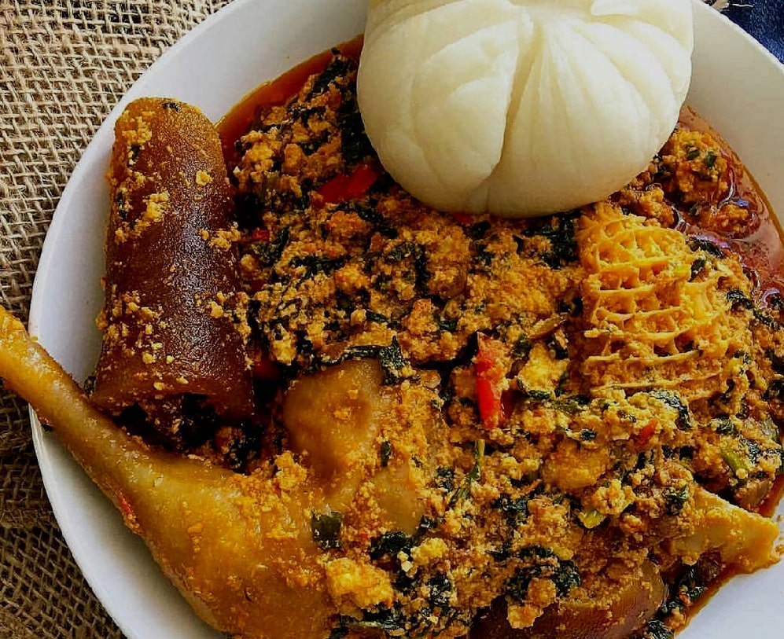

Egusi Soup

Description
Egusi soup is an exotic hearty food that will satisfy your taste buds. It is a staple in
most West African homes and it is an uncomplicated one-pot meal that is often accompanied
by swallows like Fresh garri (Eba), Amala, Semovita, Pounded yam, Fufu, and the likes.
Ingredients:
- 2 Cups Egusi (Melon)
- 1 Cup Palm Oil
- 4 Tablespoon Grounded Crayfish
- 3 Tablespoon locust beans
- 24 oz chopped Spinach
- 1 Red bell Pepper
- 1 Habanero Pepper
- 1 Fresno Pepper
- 2 Onions
- Stock Cube
- 1 lb Beef
- Salt to taste
- 3 cups of Beef stock
Steps:
- Blend the Egusi melon, half of the second onion, and crayfish together.
Set aside as well.
- Blend the Egusi melon, half of the second onion, and crayfish together. Set aside
as well.
- Heat the palm oil in a pan and allow it to melt over medium heat but don't overheat
the oil. Add the remaining half onion (diced) and half of the locust bean. Let it
cook for about 3 minutes on medium heat.
- Add the blended pepper and cook till the water is reduced this should take about
15 minutes on medium heat stirring about every 5 minutes to prevent burning.
- Add the remaining locust bean, beef stock, and salt to taste. Cover and leave to cook
for another 5 minutes
- Gently introduce the blended egusi inside the sauce but don't stir it at this point.
Just cover it and leave it to cook for about 20 to 30 minutes Keep an eye on it so it
doesn't burn but try not to stir it until the Egusi turns into a soft compact mass.
Then, gently stir together and add more stock or water if necessary.
- Add the fish and meat and leave to cook again for another 5 minutes.
- Stir in the spinach and leave to simmer for about 5 minutes (stir constantly).
Adjust the seasoning if necessary.
- Serve while still hot.